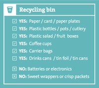

<ion-view view-title="Recycling Guide">
  <ion-nav-buttons side="left">
    <button class="button button-icon button-clear ion-navicon" menu-toggle="left">
    </button>
  </ion-nav-buttons>
  <ion-content>
    <div class="item">
      <div class="text-center">
        
      </div>
    </div>
  </ion-content>
</ion-view>